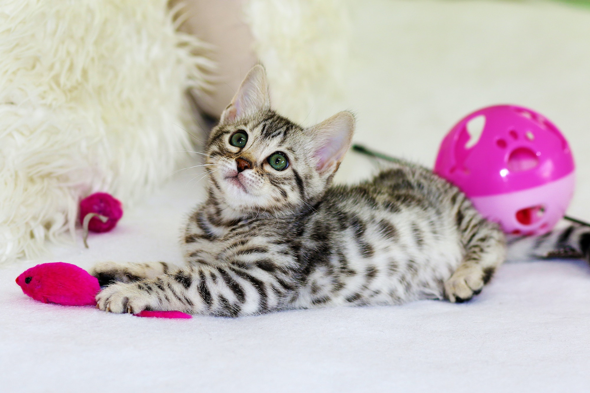

Our History
In 1931, legend has it that movie magnate Jack Warner found himself with a temperamental star on his hands. During the filming of Public Enemy Number One, James Cagney found his favorite wool cap destroyed by “dirty rats” that had inhabited his dressing room. Cagney stormed Warner’s office and fumed, “Everyone in the world knows the best exterminator of rats is the cat! You ain’t seeing me back here ‘till I hear some meowing!” The same day, Warner paid a visit to the local animal shelter and returned to the studio—with a limousine full of cats. He placed a tin can in his office he called the “kitty kitty” to collect donations for the new studio “employees.”
Today most of Tinseltown’s original stars have made their farewell performances, but the descendants of Warner’s studio cats still roam the sets. In 1984, a group of studio employees on the Warner Brothers backlot decided something had to be done for the growing number of homeless cats in their workplace. Cats at the Studios (CATS Inc.) was born: a nonprofit organization whose caregivers have picked up where Warner left off. For the past thirty years, CATS Inc. has ensured that all cats living in the studio backlots are spayed and neutered, vaccinated, provided with any needed medical care, and daily provided fresh food and water. All of the tame cats found on the backlot have been adopted into new homes.
Adoption Locations:
Submit an
Adoption Application
Petco – Encino
17919 Ventura Blvd.
Encino, CA 91316
Saturday & Sunday 12 pm-4 pm
Petco – Moorpark
742 Los Angeles Ave
Moorpark, CA 93021
Saturday & Sunday 12 pm-4pm
or by appointment Mon-Fri evenings
Petco – Porter Ranch
19869 Rinaldi Street
Porter Ranch, CA 91326
Saturday 12 pm-4 pm
Petco – Westlake
3835 E Thousand Oaks Blvd
Westlake, CA 91362
Saturday 12 pm-4 pm
Petco – Woodland Hills
21943 Ventura Blvd
Woodland Hills, CA 91364
Saturday & Sunday 12 pm-4 pm
C & C Pet Supply
3820 Verdugo Ave
Burbank, CA
Sunday 10:30 am-2:30 pm
Jump to:
Our CatsAdoption Application
Volunteer Application
Donate to CATS, Inc.
Contact
CATS INC.P.O. BOX 1843
BURBANK, CA 91507
CatsAtTheStudios@yahoo.com